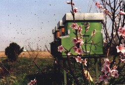

L'alveare è formato dalle api e dai favi costruiti su appositi telaini mobili (normalmente 10) che consentono all'apicoltore di controllare l'attività della famiglia. E' composto da due parti distinte: il nido, nel quale si svolgono tutte le attività di allevamento della covata e di immagazzinamento delle scorte alimentari di pronto utilizzo ed il melario, posto sopra al nido, nel quale le api depositano esclusivamente il miele.